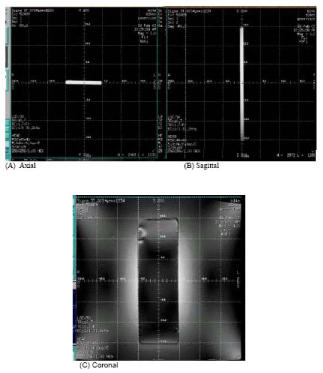
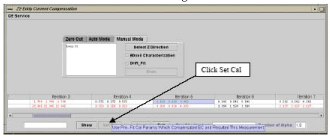
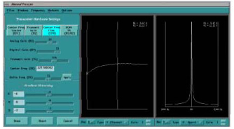

Operating Documentation
Direction 5440000, Rev# 5
Signa HDxt Service Methods
Module Version 4.0, Version Date 11/25/08
Operating Documentation |
| Required Persons | Preliminary Reqs | Procedure | Finalization |
|---|---|---|---|
| 1 | 20 mins | 6 hours | Not Applicable |
If your site needed to perform the Shim Supply Modifications and the Z2 CRM modification as a part of FMI 60648 prior to the upgrade to e2, then Z2 calibrations will need to be performed. You will know if your site needs to perform Z2 ECC calibration if your site has the 8 channel shim supply and the pigtail B0 Shim Cable shown in Illustration 1.
Illustration 1: B0 Cable Connector

| Item | Qty | Effectivity | Part# | Manufacturer | |
|---|---|---|---|---|---|
| Z2 ECC Phantom | 1 | - | 2376281 | - | |
| Z2 ECC Phantom Positioner | 1 | - | 2376291 | - | |
| 3.0T Head Coil | 1 | - | - | - | |
| Condition | Reference | Effectivity |
|---|---|---|
Gradient calibration must be within specification | - | - |
Eddy Current Compensation must be within specification | - | - |
LV Shim must be within specification | - | - |
No Image Artifacts are present | - | - |
BO Compensation Hardware Installed (8 Channel Shim Power Supply, 8 Channel Shim Cables, 8 Channel Shim Filter, Bo Wound CRM Coil) | - | - |
Communication with High Order Shim Power Supply is functional. Refer to 3.0T HOS Functional Check Procedure. | - | - |
The effectiveness of high order shimming on the 3T VH/i scanner has a great impact on the image quality (IQ), such as functional imaging and spectroscopy. On the 3T/94 magnet, it has been found that the Z2 component of the high order shimming process contains eddy currents that produce undesired magnetic fields negatively effecting IQ. These undesired magnetic fields need to be measured and compensated for to improve IQ. The Z2 calibration tool uses a specially designed flat rectangular Copper Sulfate phantom. The tool uses an 8-channel High Order Shim Supply to provide the necessary compensation to both a B0 coil that is wound around the CRM coil, and to the Z2 coil. Two channels of the shim supply are allocated for Z2 compensation (for the Z2 component and B0 induced Z2 component). The Z2 ECC tool provides a pre-emphasis compensation for Z2 in a similar fashion to which Grafidy3 provides gradient eddy current compensation for the X, Y and Z gradients. It consists of four parts: graphical user interface (GUI), data acquisition (PSD), and real-time communication using SVAT and data analysis using minilab.The creation of the Z2ECC calibration requires the user to run a localizer scan on a phantom and to adjust its position to within 5 mm as prescribed by the procedure. After the phantom is positioned the user will run the B0 Coil and Z2ECC Functional Check. If the functional check indicates Z2ECC must be run, user will run an automatic script. After selecting Automatic Mode, the tool will automatically characterized the B0 coil running several iterations. It is expected that this process will take 5 to 6 hours to complete.
The following contains the steps in which the system will configure the Z2 hardware.
| ||||
| Centering of the Z2 ECC phantom is critical to the success of the tool. Center the tool in all three planes to +, - 3mm. | ||||
Put the rectangular phantom on the top of the phantom positioner at the center of the head coil (remove the lower flat holder in the head coil so the sponge can sit lower).
Landmark at the center of the phantom using the Alignment Lights.
At the keypad on the magnet enclosure, press [Landmark], then [Advance to Scan].
Setup and Run Localizer Scan. Refer to Table 1 for Localizer Scan Protocol.
Table 1: Localizer Scan Protocol
| Patient Register [New Pt] | |||
| Patient Information | Scanning Range | ||
| Patient Id | geservice | FOV | [40] |
| Patient Name | z2ecc | Slice Thickness | [5] |
| Weight (Lb) | 111 | Spacing | [0.0] |
| Start | |||
| Landmark | End | ||
| Landmark [>] | [Naison] | # Sllices | |
| R/L Center | [0.0] | ||
| Patient Protocols | [Patient Position] | A/P Center | [0.0] |
| Table Delta | |||
| Patient Position | S/I | [0.0] | |
| Patient Position [>] | [Supine] | # of Slices per plane | [1] |
| Patient Entry [>] | [Head First] | Table Delta | [0.0] |
| Coil [...] | [Head] | ||
| Acquisition Timing | |||
| Imaging Parameters | Freq | [256] | |
| Plane [>] | [3-plane] | Phase | [256] |
| Mode [>] | [2D] | Nex | [1] |
| Pulse Seq [...] | [Localizer] | Phase FOV | [1.00] |
| Scan Timing | n/a - no change | ||
After the scan is complete select the image series from the Image Browser, enable the grid.
Illustration 2 shows the axial, sagittal and coronal images of the phantom. The image should be at the center of the FOV. In the sagittal view, the phantom ends should be located at 1=150 (+/-3) and S=150 (+/-3). If the ends of the phantom do not fall into this range, reposition phantom and return to step 4. If the ends of the phantom fall into this range, continue on to the next step.
Illustration 2: Phantom Localizer Images

In the Service Browser, click the Calibration tab and then click Z2 Eddy Current Compensation.
In the tool's window, click [Click here to start the tool].
Once the tool loads, initialize all the cal values by:
Clicking on [Zero Out] tab (default)
Clicking on [Select All]
Clicking on [Zero Out Cal Values], [Message], [Remove text files failed]
| NOTE: | You may see the following text appear “No b0_coil_params.txt file, need to do B0 Characterization”. This means that the B0 characterization has not been run. Select [OK]. |
Click on [Auto Mode] tab (See Illustration 3.)
Illustration 3: Z2 Eddy Current Compensation GUI

Select [Z Direction] by clicking on it.
Click on [Scan].
This will start the Z2 ECC tool. The Scan button will be disabled through the process. The performance number will be displayed in each iteration. The process will stop in the maximum number of iterations is reached (default to 10), or both B0 and Z2 term reached the target values. B0 spec = 1Hz, target = 0.5Hz, Z2 spec = 1Hz, target = 0.5Hz. When the performance is under spec, the performance number will be displayed as black. If the performance is under target, the performance number will be displayed as green, and not more iterations are needed when it is green.
| NOTE: | The first iteration is for B0 coil characterization, there
is no Z2 fit. Please no not click in the performance data under it.
(Clicking generates a non-harmful Java error.) First iteration takes
about 45 minutes. You can view each iteration fit and measurement curve only after that iteration is finished. The total process takes about 5:30-6:00 hours (for default 10 iterations). It could finish earlier when both Z2 and B0 meet target early. If the “Scan” button lights up, that means the process is done. |
Wait for the tool to finished auto mode.
If all terms come within spec and the optimal calibration is shown on the last iteration, click the Exit button. All the performance data and cal values will be saved to a log in the /usr/g/bin/z2ecc/log directory. The calibration is complete!
If the last iteration does not show the best fit possible, refer to Step to select an earlier iteration. The best-fit possible has the smallest number.
This will make sure that the best Z2ECC results will be used to create the calibration file. This section must be performed before you exit the tool.
Switch to the [Manual Mode] tab.
Click on the cell with the best performance data (the cell that has the lowest 3 values). This cell will be highlighted.
Then move the cursor to Set Cal and click on it. The best fit result will not be saved and downloaded to the system. See Illustration 4.
Illustration 4: Setting Calibration File

To confirm that the correct values were saved, double click on the same cell selected in Step 3. A plot of data should appear.
Select [More] at the bottom of the plot and a separate window will open with a list of “previous params.”
Open a C Shell window. Type the following: cd /usr/g/caldir<Enter>, more resistive_shim_comp.txt. <Enter>
Check if the corresponding cal values (z2 or B0) are the same as the one displayed in the text as the ones listed after previous params in Step 3. See Illustration 5.
Illustration 5: Resitive_Shim_Comp.txt File Showing Previous Params

If Z2 ECC does not converge, the following steps can be performed to assist with troubleshooting:
Open a C-Shell.
type z2download -install <Enter> (It will download the executable image to the Shim Supply and then reboot the shim supply).
This section makes sure that the BO Coil is connected correctly and shim supply responds correctly.
Keep the phantom setup and series the same as Localizer Scan and Phantom Position, Step 4. Go to the Scan Page and click on [auto prescan], and record the center frequency.
CFO = ________________ (Example: CFO = _127738007_)
Place 0.15 amps into the BO coil by going to service desktop and opening a c-shell. Type the following: z2download -seterrchan 0.15 <Enter>
Going to the scan page and click on [auto prescan] again, record the center frequency.
CF1 = __________________ (Example: CF1 = _127727976_)
CF1 should be 20-30 Hz less than CFO
If the center of the frequency does not change, there is a BO coil connection or shim supply problem.
If the CFO-CF1 <0, then the BO coil is polarity is wrong, switch the polarity by exchanging the pins in the cable for Z2. See Illustration 1. IMPORTANT: Be sure to remember to put the pins back into the same two holes that they were removed from! Test again.
Set BO current to 0 by going to the service desktop and opening a c-shell. Type the following: z2download -seterrchan 0<Enter>
This section determines the system response to resistive shim Z2 current inputs. It should be run before and after running Z2 Eddy Current Calibration tool. This check confirms that the Z2 power supply, cables/filters, coil and calibration are correctly working to significantly reduce the time that the center frequency changes when Z2 coil is activated.
Use the same phantom setup from Localizer Scan and Phantom Position.
Setup protocol that is listed in Table 1; however, turn off autoshim.
Select [Save Series] and then [Auto Prescan].
On the SCAN page, right click on [Research Operation], and then select [Setup Params].
Under window 1, set frame to 1,0 and click <Done>.
Start [Manual Prescan] and select [Center Freq Fine (CFH)]
In the Manual Prescan window, from the [Windows] menu select [Two Windows]. Set the first window type to [1 Channel] and the second window type to [P.Spect]. Both windows should be on Rec 1.
Open a command window. To do this, move the mouse over on the desktop frames, press <Alt - F7> to move the window off-screen and expose the desktop, right click, select [Service Tools], and [Command Window].
Type the following: setcurrent z2 1<Enter>
The center frequency will shift off the center as in Illustration 6. Wait a couple of seconds for it to stabilize.
Illustration 6: CF When Z2 Current is Set to 1 Amp

In the command window, type the following and begin taking a time measurement (in seconds) once you hit enter: setcurrent z2 0<Enter>
Stop the time measurement once the CF has stabilized. See Illustration 7. This can take up to 5-10 minutes.
Illustration 7: CF When Z2 Current is set to 0 Amps

If the time measurement is less than 30 seconds, the system has correct Z2 eddy current compensation. No further action is required. If the time measurement is greater than 30 seconds, then proceed to Running Z2 Eddy Current Calibration Tool, Step 1. Click [Done], to exit out of manual prescan, and end the exam. (Took about 1 minute).
No finalization steps.